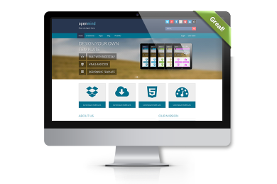

REST APIs
REpresentational StateTransfer of anApplication Programming Interface
Who Am I?
This is what I do:
- full
 (+
(+  )
) 

In the Beginning...
 WEB SERVERChanging landscape
 WEB SERVER
WEB SERVER
Where we are today:

PROBLEM:
Handling multiple devices
???
solution #1: RESPONSIVE DESIGN


solution #2: CUSTOM APPS
- native to each device
- customized UX
- visual design is appropriate
- much, much smoother
Modular version
ModuleConfig.cfc: setup and routesSetting up your event handlers
restricting REST verbs, returning data in desired formatusing your pre/post/around handler to your advantage
[code examples]being efficient: caching results
[code examples]Being secure: protecting your API
[ideas and code examples]RELAX tools
[forgebox link and github repo]Setting it up...
Using the resource for testing routes
Logging with RELAX
NOTE: rest of preso dedicated to showing off simple example. That, and some of these slides may become 2 or more.